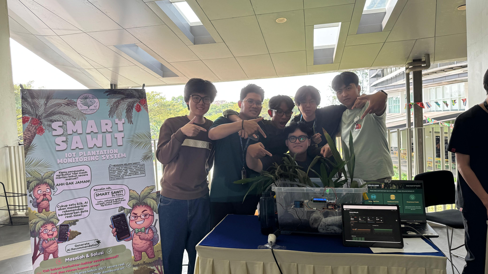
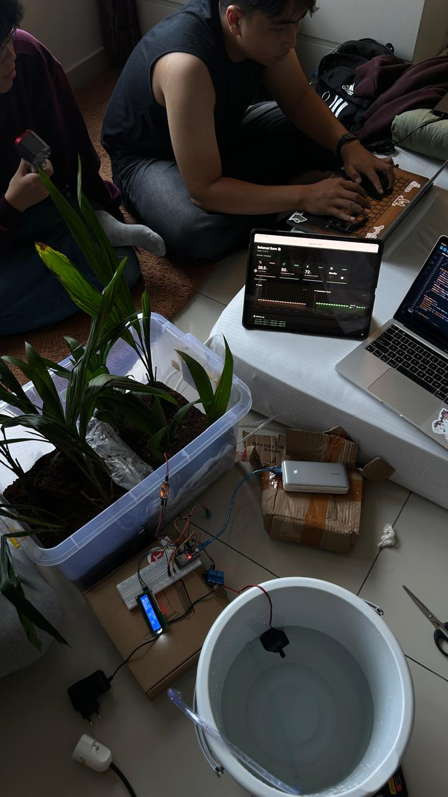
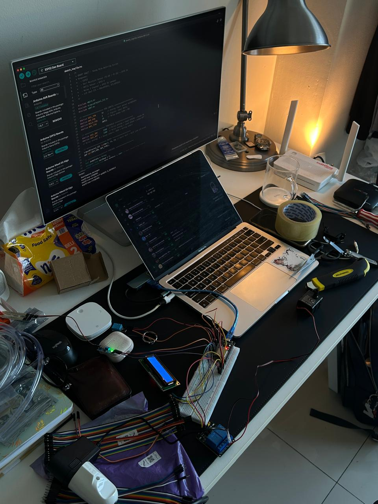
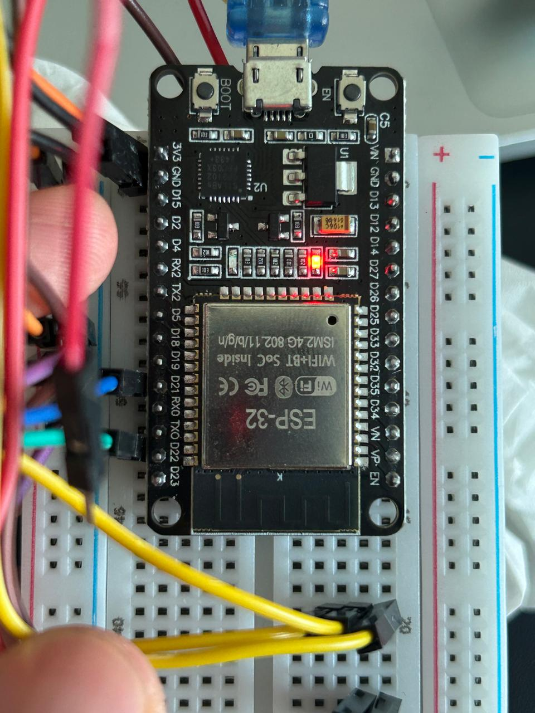

Smart Sawit
An IoT telemetry pipeline for palm oil plantations that streams real-time microclimate data to a Blynk cloud dashboard and uses the Gemini API to turn sensor readings into automated agricultural recommendations.
The Problem
Maintaining plants is easier when their conditions are tracked consistently and watering can be automated — and when the raw sensor data is turned into something a person can actually understand and act on. Palm oil plantations were used as the example use case.
The Solution
An IoT plant-monitoring system that reads soil moisture and air humidity, supports automated watering, and uses generative AI to turn the sensor data into natural-language summaries and recommendations — for example, when watering may be needed and what the plant may lack.
My Contribution
I initiated the plant-monitoring system concept and proposed introducing AI into the project. I contributed to the AI integration, reviewed teammates' code and results, and took part in testing and integration.
Main Features
- Soil moisture detection at intervals
- Air humidity detection
- Automated watering system
- Generative AI summary and recommendation based on the sensor data
Technology
Process
The main challenge was integrating the hardware and software, which took extensive trial and error. We solved it through collaborative testing and code review across the team.
Outcome
A working prototype was successfully operated and produced the expected data, and the project achieved 1st Place in the Smart Application project.
What I Learned
- How sensors and a microcontroller work together to capture real-world data (soil moisture, air humidity) and drive automated actions like watering.
- How generative AI can turn raw sensor readings into clear, human-readable summaries and recommendations.
- How to collaborate, review teammates' work, and integrate hardware with software under real project constraints.
Gallery



